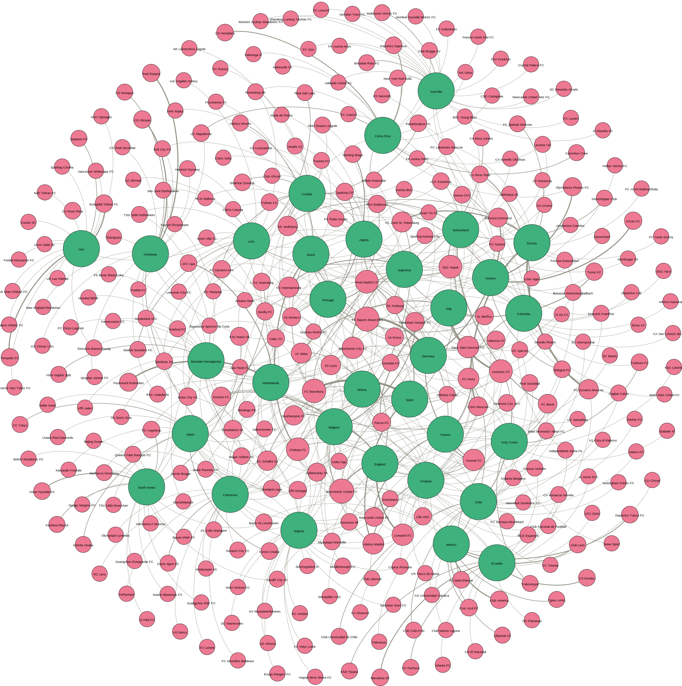
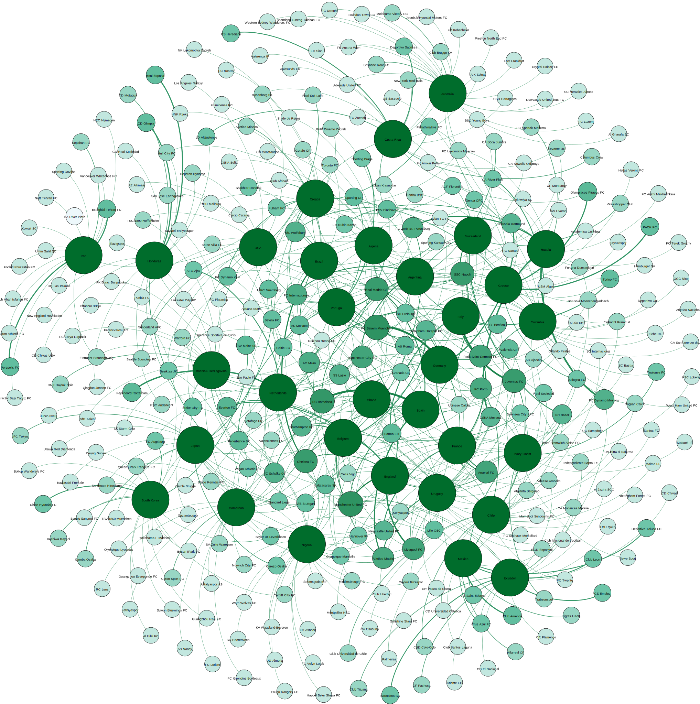
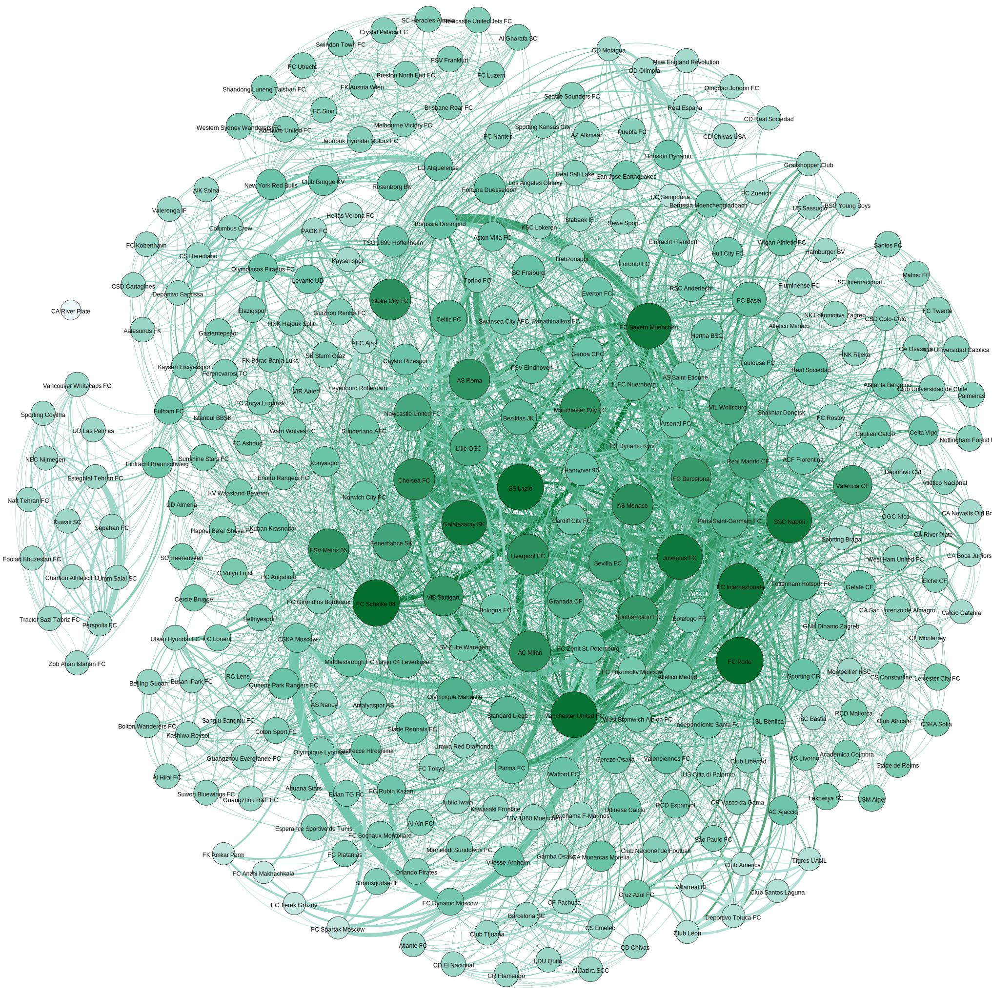
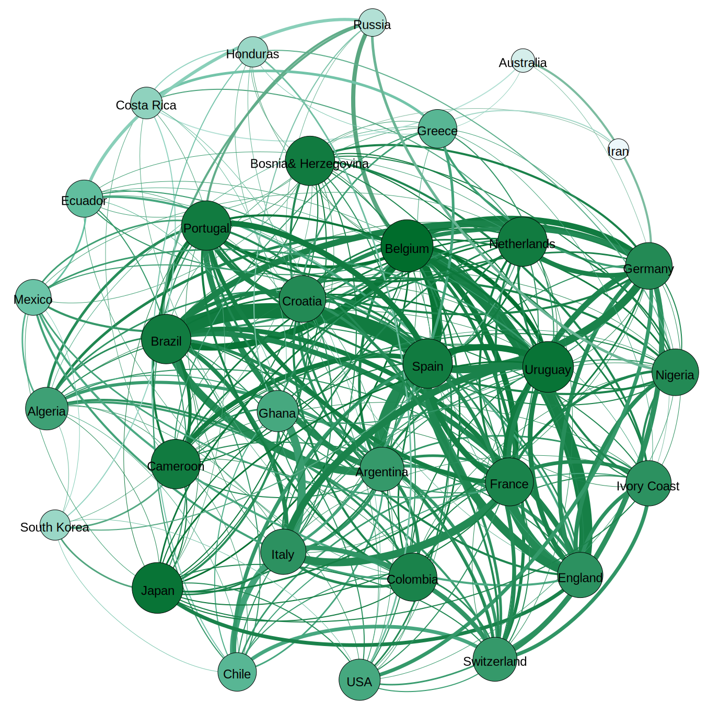

Gephi - visualisation de graphes
Nous vivons dans un monde connecté: réseaux de transport, trafic aérien, réseaux sociaux, l’internet… Il existe de nombreux exemples montrant la manière dont nous sommes connectés avec notre environnement. De plus, le monde dans lequel nous sommes est de grande dimension : on peut par exemple évoquer l'incroyable chiffre de 7 milliards de personnes sur terre. Imaginez combien d’adresses mails, achats, inscriptions à différents services, comptes bancaires, profil Facebook, etc… peuvent être générés !
Ce tutoriel est une introduction sur un outil qui sert justement à visualiser des graphes dans de grandes dimensions: Gephi. Vous pouvez le télécharger ici pour Windows, Linux ou Mac OS.
Rappelez vous qu’il s’agit d’un outil pour la visualisation, alors n'hésitez pas à visualiser plus de choses que ce qui est proposé ici. Changez les couleurs, les options et regardez les effets dans vos graphes.
1. Données
Aujourd’hui c’est le 14 de décembre de 2017. Nous sommes à exactement 6 mois de l’ouverture de la Coupe du Monde Fifa 2018!
Ainsi, les données que nous allons utiliser dans ce tutoriel sont liées à cette thématique et vous pouvez les trouver ici. Vous pouvez les télécharger et explorer tout ce qui est à votre disposition. Bien sur vous pouvez aussi trouver d’autres données sur internet sur n’importe quel sujet. Il faut aussi penser au format de ces données.
Pour faire notre visualisation sur Gephi, on a besoin d'au moins deux fichiers: un pour les noeuds et un autre pour les arcs. Alors vous aurez sûrement besoin de transformer vos données avant des les utiliser sur Gephi. Vous pouvez télécharger ici le script en R qui a été écrit pour ce tutoriel.
2. One-mode graphes
Un graphe one-mode possède seulement un type de noeud. Dans notre cas, tous les noeuds sont les joueurs de la coupe du monde de 2014. Cela nous fait 32 x 23 = 736 noeuds.
La première étape est d’importer les données dans notre data laboratory. Pour cela, cliquez sur new project (dans file) et puis sur Import Spreadsheet. Nous allons commencer par importer les trois fichiers suivants: noeuds-2014.csv, arcs-countries-2014.csv et arcs-clubs-2014.csv. À chaque fois, vous verrez qu’il y a deux étapes pour l'importation. Premièrement, il faut choisir si les données correspondent à des noeuds ou des arcs. Deuxièmement, il faut choisir quelles colonnes seront importées et les types de données qu’elles contiennent.
Attention! À partir du deuxième fichier, n'oubliez pas de sélectionner l’option Append to existing workspace au moment de confirmer l'importation.
Après cela, vous verrez une image dans votre écran du graphe que nous venons d’importer. Oui, elle n’est pas du tout compréhensible! Allons changer cela!

2.1. Tailles et couleurs de noeuds
Sélectionnez l’onglet Appearance. Vous trouverez les options pour les noeuds et arcs. Pour les noeuds, on a quatre options: la couleur et la taille des noeuds , la couleur et la taille du texte.
Pour la taille, on a deux options: unique et ranking. Comme le nom le suggère, l’option unique sert à choisir une seule taille pour tous les noeuds. L’option ranking va donner des tailles différentes en fonction du paramètre choisi. Sélectionnez le champ Degree et regardez le résultat. Les noeuds avec le plus grand rang sont plus grand que les autres.
Pour la couleur on a exactement la même logique et on a une autre option: Partition. Cette option nous permet visualiser en couleurs différents attributs qui sont donnés comme texte. Sélectionnez le champ country et regardez le résultat. Chaque pays a une couleur différente.
Observation: comme vous avez certainement observé, on a les mêmes options pour les arcs dans l’onglet Edges. La logique pour les utiliser est la même.


2.2. Spatialisation
Vous devrez avoir à cet étape des noeuds et arcs en couleur et de différentes tailles. Mais leur position dans l'espace est encore la même, donc pas très visible.
Trouvez l’onglet Layout. Vous verrez plusieurs options disponibles. Chacune d'entre elles est un algorithme de réorganisations des noeuds dans l’espace. Essayez-en quelques un, changez les paramètres… Vous verrez qu’il y a des groupes qui commencent à se former.
Vos graphes doivent ressembler aux graphes suivants, pour ces algorithmes.
3. Two-mode graphes
Comme vous pouvez le penser, cela signifie : un graphe dont les noeuds peuvent avoir des noeuds de deux types différents.
Pour cet étape, créez un nouveau workspace et importez les données des fichiers arcs-clubs-countries-2014.csv, arcs-clubs-countries-2014.csv et noeuds-clubs-countries-2014.csv exactement comme la dernière fois. Maintenant, nous avons des noeuds qui peuvent être de deux classes: country ou club. Chaque arc lie un club à un pays à qui il envoie des joueurs, avec un poids qui a le valeur de combien de joueurs il envoie.
Vous pouvez essayer de refaire tout ce qu’on a fait jusqu'ici : visualiser les noeuds en fonction de sa classe, son pays, quantité de joueurs. Profitez-en pour regarder aussi l'effet des poids des arcs dans la visualisation, qui n’était pas possible lors du dernier exemple.
Nous pouvons voir tout cela, mais on n’a pas vraiment d’informations intéressantes. Il est évident que les noeuds de pays sont plus gros que les noeuds des clubs, par exemple. Comme on sait qu’il y a deux classes, l'intérêt et de savoir comment les noeuds de l’une sont liés en fonction de ceux de l’autre.
Pour cela, nous avons besoin d'un plugin.


3.1. Plugins
Les plugins sont des modules additionnels qui peuvent être installés pour offrir au logiciel plus fonctionnalitées. Cliquez sur Tools > Plugins et une nouvelle fenêtre s’ouvre. Vous pouvez maintenant regarder tous les plugins qui sont déjà installés (quelques uns viennent par défaut quand Gephi est installé), ceux qui sont disponibles et les mises à jour. Vous pouvez aussi installer un nouveau dans l’onglet Available Plugins.
Installez le plugin MultiMode Networks Projection, nous allons l’utiliser. Attention : pour que le plugins (ou les actualisations) soient disponibles, il faut réinitialiser Gephi.
3.2. MultiMode Networks Projection
Après avoir réinitialisé Gephi, vous verrez une nouvelle fenêtre qui correspond à ce nouveau plugin. Cliquez sur Load attributes et ensuite sélectionnez class, Club - Country et Country - Club. Cochez les cases Remove Edges et Remove nodes et finalement Run!
Allez d'abord sur Data Table. Les noeuds qui étaient de classe Country ont été enlevés et des nouveaux arcs ont été créés. En fait, pour chaque deux noeuds Club qui étaient à un noeud Country, le plugin a ajouté un nouvel arc. Alors on peut visualiser les interactions entre les types en fonction des joueurs qui iront jouer ensemble dans différents pays.
Nous pouvons faire l’inverse aussi. Avec Country - Club et Club - Country nous allons avoir seulement les noeuds Country à la fin et nous pourrons regarder les pays qui reçoivent des joueurs des mêmes clubs.

